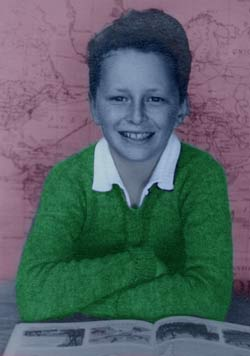

|  |
This image started as a black and white print and was scanned as greyscale. I made lots of duplicate layers and then after adjusting colour values on each layer I erased different areas using the airbrush eraser. I was particurlarly keen to show you the clean white shirt and the pullover that my mother made for me. I don't remember the colour actually! Notice the geography book and the map of the world in the background. |
| One of those school photos. . | I think I was about 11. |
|
Click
over the image to go back to the thumbnails
|
|
| Chris Jennings - Self Portrait |
Last updated:
|